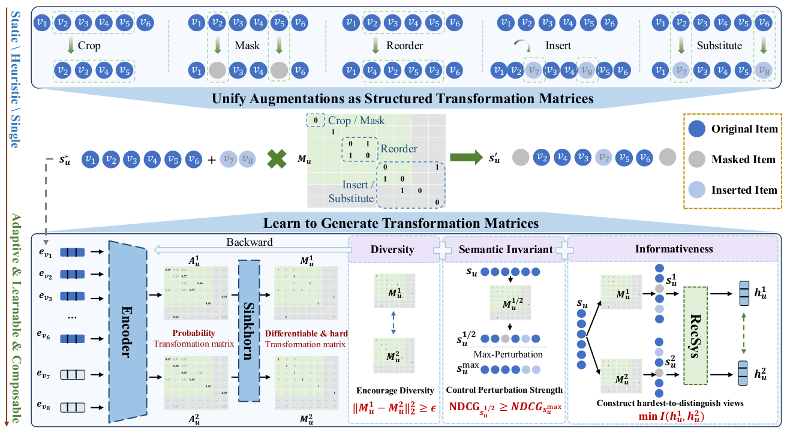
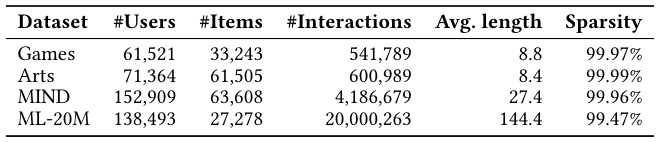
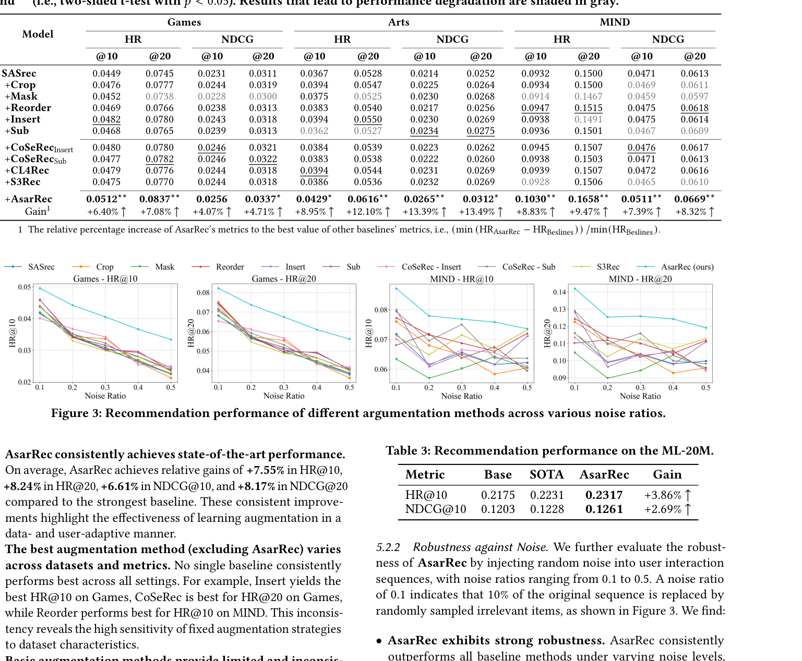
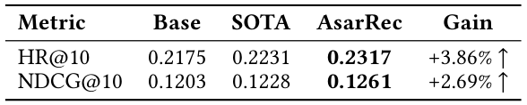
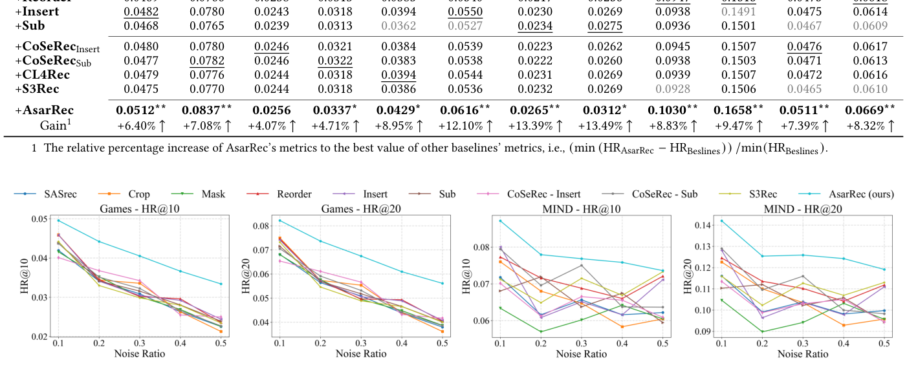
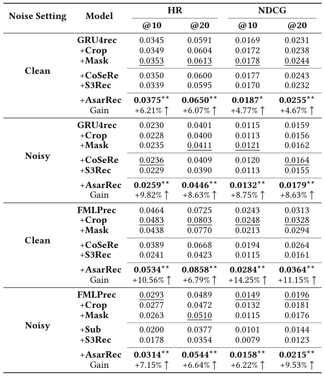
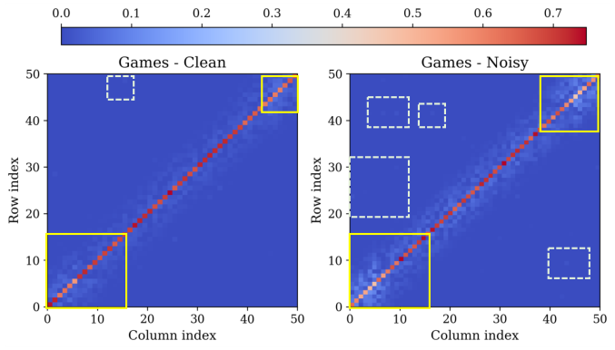
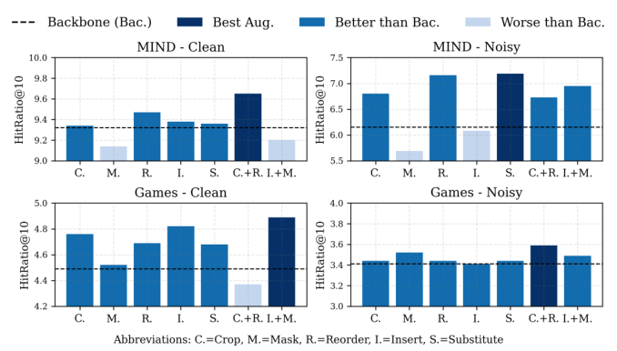

AsarRec: Adaptive Sequential Augmentation for Robust Self-supervised Sequential Recommendation (面向鲁棒自监督序列推荐的自适应序列增强)
- 会议/期刊: SIGIR 2026
- 推荐链路定位: 召回 (Retrieval) — 序列推荐主干（SASRec/GRU4Rec/FMLPRec）的对比学习训练阶段增强
- 研究方向: 自监督对比学习与交互去噪 / 序列与会话推荐
- 论文原文: https://arxiv.org/abs/2512.14047v2
- 开源代码: https://github.com/Kaike-Zhang/AsarRec
TL;DR (核心速览)
针对序列推荐中静态数据增强（Mask/Crop/Reorder/Insert/Substitute）在不同数据集与噪声水平下收益不稳定、甚至掉点的问题，AsarRec 将五种增强统一为半双随机变换矩阵 \(s'=M\cdot s\)，用自注意力编码 + 可微 Semi-Sinkhorn 为每个用户自适应生成硬变换矩阵，并以多样性、语义不变性、信息性三目标联合优化。在 Games/Arts/MIND/ML-20M 上采用留一法 + Full-Ranking 评估，相对最强基线平均提升 HR@10 +7.55%、NDCG@20 +8.17%，且推理零开销。
Background & Motivation (背景与动机)
- 领域背景与主流范式: 序列推荐（SASRec、GRU4Rec、FMLPRec）依赖用户反馈建模动态兴趣，但真实反馈含人类误操作、不确定性与行为歧义噪声。主流鲁棒化路线是自监督对比学习（S3Rec、CL4Rec、CoSeRec）：对序列施加扰动生成两个视图，最大化互信息（InfoNCE），学习噪声不变表征。
- 现有方法局限 (Limitations of Prior Work):
- 静态增强与场景强耦合：增强类型一旦选定即对所有用户/数据集统一施加。图 1 显示 Games 上 Mask 有正收益（过滤低信息交互），MIND 上却掉点（删除语义关键物品破坏长程依赖）；Insert 在 Games 干净场景收益显著，但在 20% 噪声下进一步注入新物品导致训练失稳。
- 组合增强不可控：MIND+20% 噪声下 Insert+Mask 组合远超单一增强，而 Games 干净场景下 Crop+Reorder 组合甚至低于任一单独增强。
- 盲目增强可能损害性能：增强空间巨大但适配性高度依赖数据特征、噪声条件与用户行为模式，静态策略严重限制 SSL 潜力。
- 核心挑战 (Key Challenge): 不同增强操作对序列的修改方式本质不同（删除/重排/插入/替换），如何在一个统一、可微、可组合的框架内为每个用户自适应选择增强类型及其组合？
- 核心洞察与切入点 (Key Insight): 作者观察到 Crop/Mask/Reorder 均可写成对序列左乘一个 \(\{0,1\}\) 半双随机矩阵（行/列和均为 0 或 1），Insert/Substitute 可通过随机 padding 扩展序列后纳入同一框架。于是"选增强"转化为"生成受约束的硬变换矩阵"，可用 Sinkhorn 类可微投影端到端学习。
Problem Formulation & Method (问题定义与方法架构)
1. 符号定义与输入表征 (Notations & Input Representations)
- 用户集 \(\mathcal{U}\)，物品集 \(\mathcal{V}\)；用户 \(u\) 的历史交互序列 \(s_u=[v_1,\dots,v_{|s_u|}]\)，目标为预测下一物品 \(v_{|s_u|+1}=\arg\max_{v\in\mathcal{V}} P(v\mid s_u)\)。
- 训练序列截断至最多 50（\(L=50\)）；经随机 padding \(k\) 个新物品后得到扩展序列 \(s_u^*\in\mathbb{R}^{|s_u^*|\times d}\)，\(d\) 为物品 embedding 维度（原文未单独报告具体 \(d\) 值，沿用各 backbone 原始实现）。
- 输出：两个视图的硬半双随机变换矩阵 \(M_u^1, M_u^2\in\{0,1\}^{|s_u^*|\times|s_u^*|}\)，以及增强序列 \(s_u^z = M_u^z\cdot s_u^*\)。
2. 整体流水线 (Overall Architecture)
数据流：原始序列 → 随机 padding 扩展 → backbone 编码为 embedding 序列 → 共享线性投影 \(W\in\mathbb{R}^{d\times d'}\) → 两个独立自注意力模块生成概率转移矩阵 \(A_u^{(z)}\) → Semi-Sinkhorn 投影为硬半双随机矩阵 \(M_u^{(z)}\) → 左乘得到增强视图 → 送入推荐模型计算 InfoNCE 与推荐损失，同时三约束反传更新增强编码器。
flowchart TD
A["输入层: 用户序列 s_u + 随机 padding 扩展为 s_u*"] --> B["Backbone 编码: embedding 序列 s_u* ∈ R^{|s_u*|×d}"]
B --> C["共享线性投影 W + 两个独立自注意力 → 概率转移矩阵 A_u^(1), A_u^(2)"]
C --> D["可微 Semi-Sinkhorn 投影 → 硬半双随机矩阵 M_u^(1), M_u^(2)"]
D --> E["增强视图 s_u^z = M_u^z · s_u*"]
E --> F["推荐模型 f(·) + InfoNCE 对比损失"]
D --> G["三约束: 多样性 L_div / 语义不变性 L_NDCG / 信息性 L_info"]
F --> H["联合损失 L = L_info + λ_div·L_div + λ_NDCG·L_NDCG"]
G --> H图 2 展示了该框架从"静态/启发式/单一增强"到"自适应、可学习、可组合增强"的转变。

3. 核心模块设计与数学原理 (Key Designs & Formulations)
(1) 增强操作的统一矩阵形式化。对 Crop/Mask/Reorder，增强序列为 \(s'=M_o\cdot s\)，其中 \(M_o\in\{0,1\}^{|s|\times|s|}\) 为硬半双随机矩阵，满足 \(\sum_j M_{o,i,j}\in\{0,1\}\)、\(\sum_i M_{o,i,j}\in\{0,1\}\)。行全零表示该物品被 Mask（Crop 视为连续 Mask）；\(M_{o,i,j}=1\) 表示原序列第 \(i\) 个物品被放到位置 \(j\)（Reorder）。对 Insert/Substitute，先随机 padding \(k\) 个不在 \(s\) 中的物品得 \(s^*\)，再在 \((|s|+k)\times(|s|+k)\) 上施加同约束矩阵；若存在 \(i\ge|s|, j<|s|\) 使 \(M_{i,j}\ge 1\)，即表示新物品被插入或替换进历史序列。由此五种操作统一为同一结构化约束族。
(2) 概率转移矩阵生成。给定 \(s_u^*\)，经共享投影与两个独立自注意力头生成概率矩阵：
其中 \(W_Q^{(z)},W_K^{(z)}\in\mathbb{R}^{d'\times d'}\)，\(A_{u,i,j}\) 表示物品 \(v_i\) 映射到位置 \(j\) 的概率。物理直觉：自注意力天然刻画物品间"谁该去哪"的软对应关系，为后续硬投影提供可微起点。
(3) 可微 Semi-Sinkhorn 硬投影。直接学习离散强约束矩阵存在梯度消失/不稳定，故对 \(A_u^{(z)}\) 迭代行归一化、列归一化 \(T\) 次，将行/列中 max-min 差小于阈值 \(\delta\) 的行列置零（实现"半"双随机，允许整行/整列归零以表达 Mask），最后按行/列 argmax 得硬矩阵，并用 straight-through 技巧 \(M=(M_{\text{hard}}-S).\text{detach}()+S\) 保留梯度（算法 1）。相比 softmax 投影，该过程缓解梯度尺度失衡，多次迭代后仍稳定逼近二值结构。
4. 训练目标、负采样与推理复杂度 (Optimization, Negative Sampling & Complexity)
- 损失函数（式 12）：
- 多样性：\(\mathcal{L}_{\text{div}}=\mathbb{E}_u[\max(0,\epsilon-\|M_u^1-M_u^2\|_2^2)]\)，\(\epsilon=20.0\)，防止两视图退化为同一序列（否则 InfoNCE 梯度爆炸）。
- 语义不变性：定义 Sequence-aware NDCG，按物品在原序列中的位置赋相关性 \(r_i=\text{position}(v_i)\)（越近相关性越高）；构造最坏退化参考 \(s_u^{\max}\)（将最近 \(\lfloor\gamma|s_u|\rfloor\) 个高相关物品替换为无关物品，相关性置 0），\(\mathcal{L}_{\text{NDCG}}=\mathbb{E}_u[\sum_{z=1}^2\max(0,\mathrm{NDCG}_{s_u^{\max}}-\mathrm{NDCG}_{s_u^z})]\)，约束扰动不破坏近期语义。
- 信息性：\(\mathcal{L}_{\text{info}}=\mathbb{E}_u[\log\frac{\exp(\mathrm{sim}(f(s_u^1),f(s_u^2))/\tau)}{\sum_j\exp(\mathrm{sim}(f(s_u^1),f(s_u^2_j))/\tau)}]\)，即 InfoNCE，\(\tau\) 为温度系数，分母对 batch 内 \(N\) 个负样本求和（in-batch 负采样，原文未报告 \(\tau\) 具体取值）。
- 训练负采样策略：对比学习采用 in-batch 负采样（分母为 batch 内其他用户视图）；推荐主任务沿用各 backbone 原始训练方式（原文未额外说明主任务负采样细节）。
- 时间与空间复杂度：backbone 前向为 \(\mathcal{O}(BL^2d)\)（Transformer）或 \(\mathcal{O}(BLd^2)\)（RNN）；基本增强为 \(\mathcal{O}(BL)\)；AsarRec 额外生成概率矩阵与 Sinkhorn 投影均为 \(\mathcal{O}(BL^2)\)（小常数），总体渐近复杂度仍为 \(\mathcal{O}(BL^2d)\)，与 backbone 同阶。表 5 实测单 epoch 训练时间：backbone 23.25±0.67s，Mask 32.59±0.96s，Crop 33.63±0.83s，Reorder 39.35±1.37s，Insert 34.34±0.62s，Substitute 32.10±0.37s，AsarRec 33.65±0.69s——与手工增强相当甚至更快。推理阶段零额外开销（不改变 backbone 与推理管线）。
Experimental Setup & Evaluation Protocol (实验设置与评估协议)
- 数据集统计与预处理: 使用 Amazon Games/Arts、MIND、ML-20M；过滤交互数少于 5 的用户（5-core 式过滤）；MIND 按文献 [10] 采样子集。

| 数据集 (Dataset) | 用户数 (#Users) | 物品数 (#Items) | 交互数 (#Interactions) | 平均序列长度 | 稀疏度 (Sparsity) |
|---|---|---|---|---|---|
| Games | 61,521 | 33,243 | 541,789 | 8.8 | 99.97% |
| Arts | 71,364 | 61,505 | 600,989 | 8.4 | 99.99% |
| MIND | 152,909 | 63,608 | 4,186,679 | 27.4 | 99.96% |
| ML-20M | 138,493 | 27,278 | 20,000,263 | 144.4 | 99.47% |
- 数据划分方式 (Splitting Strategy): Leave-One-Out (留一法)——最近一次交互作测试、倒数第二次作验证、其余（最多 50 个）作训练。该协议为序列推荐标准做法，但需注意：验证/测试取最近交互、训练取更早交互，符合时间因果，无未来信息泄露；不过 LOO 单正样本评估本身对排序稳定性较敏感。
- 排名评测协议 (Ranking Protocol): 原文未明确声明是否对全量未交互物品打分；从指标量级（HR@10 约 0.04–0.23）与领域惯例推断为 Full-Ranking（全库排序），但论文正文未显式写明，属评估协议描述不充分之处。
- 评价指标与显著性检验: HR@10/20、NDCG@10/20；对次优基线做双侧 \(t\) 检验，\(0.05\le p<0.1\) 标
*，\(p<0.05\) 标**；表 5 报告多次运行的均值±标准差。Embedding 维度 \(d\) 沿用各 backbone 原始实现（原文未单独报告）。
Key Experimental Results (核心实验结果)
1. 主实验对比 (Main Results)
以 SASRec 为 backbone 的干净场景结果（表 2）：

| 数据集 | 指标 | 最强基线 (方法/数值) | 本文方法 (Ours) | 相对提升 (Improv.) |
|---|---|---|---|---|
| Games | HR@10 | Insert 0.0482 | 0.0512 | +6.40% |
| Games | HR@20 | CoSeRecSub 0.0782 | 0.0837 | +7.08% |
| Games | NDCG@10 | CoSeRecInsert/Sub 0.0246 | 0.0256 | +4.07% |
| Games | NDCG@20 | CoSeRecSub 0.0322 | 0.0337 | +4.71% |
| Arts | HR@10 | Crop/Insert/CL4Rec 0.0394 | 0.0429 | +8.95% |
| Arts | HR@20 | Insert 0.0550 | 0.0616 | +12.10% |
| Arts | NDCG@10 | Sub 0.0234 | 0.0265 | +13.39% |
| Arts | NDCG@20 | Sub 0.0275 | 0.0312 | +13.49% |
| MIND | HR@10 | Reorder 0.0947 | 0.1030 | +8.83% |
| MIND | HR@20 | Reorder 0.1515 | 0.1658 | +9.47% |
| MIND | NDCG@10 | CoSeRecInsert 0.0476 | 0.0511 | +7.39% |
| MIND | NDCG@20 | Reorder 0.0618 | 0.0669 | +8.32% |
平均相对提升：HR@10 +7.55%、HR@20 +8.24%、NDCG@10 +6.61%、NDCG@20 +8.17%。关键观察：最强基线随数据集/指标漂移（Games 上 Insert、MIND 上 Reorder），印证静态增强的敏感性；Substitute 在部分设置下掉点（表中灰色阴影）。
ML-20M 大规模验证（表 3）：

| 数据集 | 指标 | Base (SASRec) | SOTA 基线 | AsarRec | 相对 SOTA 提升 |
|---|---|---|---|---|---|
| ML-20M | HR@10 | 0.2175 | 0.2231 | 0.2317 | +3.86% |
| ML-20M | NDCG@10 | 0.1203 | 0.1228 | 0.1261 | +2.69% |
鲁棒性（图 3）：注入 10%–50% 随机噪声，AsarRec 在所有噪声比例下持续领先，性能衰减明显更慢；静态增强随噪声上升大幅掉点。

2. 消融实验与控制变量分析 (Ablation Study)
图 6 以 Games + SASRec 为设置（横轴为 0 即移除对应组件）：
- 移除候选池大小 \(k\) 在低噪声设置下导致显著性能下降，说明其提供变换灵活性；
- 移除 \(\lambda_{\text{div}}\) 或 \(\lambda_{\text{NDCG}}\) 均带来明显退化，三约束互补；
- \(\lambda_{\text{NDCG}}\) 过小导致语义过度扭曲、干净场景掉点明显，\(\lambda_{\text{NDCG}}>5\) 后各指标稳定；
- \(k\) 在 \(\{2,3,5,10,20\}\) 范围内性能基本平稳，模型对候选池大小不敏感。
跨 backbone 泛化（表 4）：GRU4Rec 干净场景 HR@10 0.0345→0.0375（+6.21%），20% 噪声下 0.0230→0.0259（+9.82%）；FMLPRec 干净场景 HR@10 0.0464→0.0534（+10.56%），噪声下 0.0293→0.0314（+7.15%）。值得注意的是 FMLPRec 本身含去噪设计，多数手工增强在噪声下反而低于 backbone（如 Mask、Sub、S3Rec），而 AsarRec 仍稳定增益。

3. 稀疏度/冷启动分桶与超参敏感度 (Sparsity Buckets & Hyperparameters)
- 交互频次分桶：原文未按用户/物品交互频次分桶报告长尾或冷启动子群表现（原文未报告）。
- 关键超参数敏感度：\(k\) 不敏感；\(\lambda_{\text{div}}\) 与 \(\lambda_{\text{NDCG}}\) 存在有效区间，\(\lambda_{\text{NDCG}}\) 过小显著掉点；\(\epsilon=20.0\)、扰动预算 \(\gamma=10\%\) 为固定设置。
- 变换矩阵可视化（图 4）：序列头尾（尤其头部）扰动更强，符合语义不变性约束（头部扰动语义影响小）；噪声环境下扰动更集中；避免长距离重排（灰绿虚线框），倾向局部但具挑战性的扰动。
- 用户案例（图 5）：干净场景倾向 Insert/Substitute 丰富序列（NDCG 0.8201 远高于最坏阈值 0.7355）；20% 噪声下转为 Mask/Reorder 去除/重排可疑物品（NDCG 0.7666），体现按输入特征动态切换增强策略。
- 线上 A/B 测试：原文仅包含离线实验（原文未报告线上结果）。

Highlights, Limitations & Critiques (亮点、局限与审稿级批判)
- 核心亮点与可迁移性:
- 统一形式化优雅：将五类序列增强统一为半双随机矩阵左乘，使"增强选择+组合"变为单一矩阵生成问题，该视角可迁移到图增强（边/节点变换矩阵）、多模态视图构造等任意对比学习增强设计。
- 可微硬约束采样：Semi-Sinkhorn + straight-through 解决了离散强约束矩阵的端到端训练难题，且"半"双随机（允许整行归零）恰好覆盖 Mask 语义，设计精巧。
- 零推理开销：仅改训练阶段，可直接插入现有序列推荐系统，工程落地成本极低；实测训练耗时与手工增强相当。
- 三约束互补：多样性保训练稳定、语义不变性防破坏性扰动、信息性保对比收益，消融验证各自必要。
- 局限性与审稿视角批判 (Critical Limitations):
- 评估协议描述不充分：正文未显式声明 Full-Ranking 还是采样排序，也未报告 embedding 维度 \(d\)、\(\tau\)、\(d'\) 等关键超参，复现细节依赖代码仓库。
- LOO 单正样本评估：仅用最近一次交互作测试，指标方差较大；虽报告了 \(t\) 检验，但未说明随机种子数量与方差（表 5 除外）。
- 噪声注入方式单一：鲁棒性实验仅用"随机替换无关物品"模拟噪声，未覆盖真实场景中的系统性偏差（如曝光偏差、流行度偏差、恶意攻击），与去噪文献中的假阳性/假阴性噪声设定存在差距。
- 增强编码器额外参数与训练稳定性：自注意力编码器 + Sinkhorn 迭代引入额外超参（\(\delta\)、\(T\)、\(\epsilon\)、\(\gamma\)），论文未报告 \(T\) 与 \(\delta\) 的敏感度；straight-through 的梯度偏差对收敛的影响缺乏理论分析。
- 缺少与 reweight 类去噪方法的对比：相关工作提及 reweight 路线（如 Double Correction），但实验未纳入此类基线，鲁棒性主张的覆盖面略窄。
- 可解释性停留在可视化：图 4/图 5 的定性分析有说服力，但缺少"学到的增强类型分布 vs. 数据集噪声水平"的定量统计。
Rating (四维评分)
- 方法创新性 (Novelty): ⭐⭐⭐⭐
- 评估协议与实验扎实度 (Protocol & Experiments): ⭐⭐⭐⭐
- 写作与数学规范度 (Clarity & Rigor): ⭐⭐⭐⭐
- 工业落地与复现价值 (Industrial & Practical Value): ⭐⭐⭐⭐⭐
论文图表
